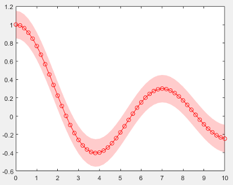
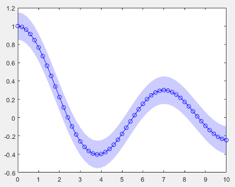

Chart Development Overview
Charting functions such as plot, scatter,
and bar enable you to quickly visualize your data with basic
control over aspects such as color and line style. To create custom charts, you can
combine multiple graphics objects, set properties on those objects, or call additional
functions. A common way to store your customization code and share it with others is to
write a script or a function. However, other people might have to be to be familiar with
your code if they want to use it and make customizations of their own.
As an alternative, you can create a class implementation for your charts by defining a
subclass of the ChartContainer base class. Creating a class enables
you to:
Provide a convenient interface for your users — When users want to customize an aspect of your chart, they can set a property rather than having to modify and rerun your graphics code. Users can modify properties at the command line or inspect them in the Property Inspector.
Encapsulate algorithms and primitive graphics objects — You implement methods that perform calculations and manage the underlying graphics objects. Organizing your code in this way allows you to hide implementation details from your users.
When you define a chart that derives from this base class, instances of your chart are
members of the graphics object hierarchy. As a result, your charts are compatible with
many aspects of the graphics system. For example, the gca and findobj functions can return instances of
your chart.
Structure of a Chart Class
The first line of a chart class specifies the matlab.graphics.chartcontainer.ChartContainer class as the superclass.
For example, the first line of a class called ConfidenceChart
looks like
this:
classdef ConfidenceChart < matlab.graphics.chartcontainer.ChartContainerIn addition to specifying the superclass, include the following components in your class definition.
| Component | Description |
|---|---|
Public property block | This block defines all the properties that you want your users to have access to. Together, these properties make up the user interface of your chart. |
Private property block | This block stores the underlying graphics objects and other implementation details that you do not want your users to access. In this block, set these attribute values:
|
| This method sets the initial state of the chart. It executes once when MATLAB® constructs the object. Define this method in a protected block. |
| This method updates the underlying objects in your
chart. It executes during the next
Define this
method in the same protected block as the
|
Implicit Constructor Method
You do not have to write a constructor method for your class because a constructor
is inherited from the ChartContainer base class. The constructor
accepts optional input arguments: a parent container and any number of name-value
pair arguments for setting properties on the chart. For example, if you define a
class called ConfidenceChart that has the public properties
XData and YData, you can create an
instance of your class using either of these
commands:
c = ConfidenceChart(gcf,'XData',[1 2 3],'YData',[4 5 6]) c = ConfidenceChart('XData',[1 2 3],'YData',[4 5 6])
If you want to provide an interface that accepts input arguments in the same way as a typical function does, you can define a custom constructor method. See Write Constructors for Chart Classes for more information.
Public and Private Property Blocks
Divide your class properties between at least two blocks:
A public block for storing the components of the user-facing interface
A private block for storing the implementation details that you want to hide
The properties that go in the public block store the input values provided by the
user. For example, a chart that displays a line might store the
x- and y-coordinate vectors in two public
properties. Since the property name-value pair arguments are optional inputs to the
implicit constructor method, the recommended approach is to initialize the public
properties to default values. If you define public properties that store coordinate
values, initializing them to NaN values or empty arrays
constructs an empty chart if the user calls the constructor without any
inputs.
The properties that go in the private block store the underlying graphics objects
that make up your chart, in addition to any calculated values you want to store.
Eventually, your class will use the data in the public properties to configure the
underlying objects. By including the Transient and
NonCopyable attributes for the private block, you avoid
storing redundant information if the user copies or saves an instance of the
chart.
For example, here are the property blocks for a chart that displays a
Line object and a Patch object. The public
property block stores values that the user can control: the x-
and y-coordinates of the line, a confidence margin value, a
marker symbol, and a color value. The private property block stores the
Line and Patch
objects.
properties XData = NaN YData = NaN ConfidenceMargin = 0.15 MarkerSymbol = 'o' Color = [1 0 0] end properties(Access = private,Transient,NonCopyable) LineObject PatchObject end
Setup Method
The setup
method executes once when MATLAB constructs the chart object. Any property values passed as name-value
pair arguments to the constructor method are assigned after this method
executes.
Use the setup method to:
Call plotting functions to create the primitive graphics objects you want to use in the chart.
Store the primitive objects returned by the plotting functions as private properties on the chart object.
Configure the primitive graphics objects.
Configure the axes.
Many graphics functions have an optional input argument for specifying the target
axes object. These functions include plotting functions (such as
plot, scatter, and
bar) and functions that modify the axes (such as
hold, grid, and
title). When you call these types of functions from within
a class method, you must specify the target axes object. You can access the axes
object by calling the getAxes
method. This method returns the axes object, or it creates a Cartesian axes object
if the chart does not already contain an axes object.
Caution
Calling plotting functions, or functions that modify the axes, without specifying the target axes might produce unexpected results.
When you call plotting functions in the setup method, specify
temporary values (such as NaN) for the coordinate data. Also,
specify temporary values for other arguments that correspond to public properties of
your class. Doing so avoids setting the same property values in both the
setup and the update methods.
If you want to display multiple primitive objects in the axes, call the
hold function between plotting commands. Set the hold state
back to 'off' after your last plotting command.
For example, consider a chart that displays a line and a patch. It has these properties:
Two public properties called
XDataandYDatafor storing the x- and y-coordinates of the lineTwo private properties called
LineObjectandPatchObject
The setup method gets the axes object by calling the
getAxes method. Then it calls the patch
function and stores the output in the PatchObject property. The
next line of code set the hold state of the axes to 'on' before
calling the plot function to create the
LineObject property. The last line of code sets the axes hold
state back to 'off'.
function setup(obj) % Get the axes ax = getAxes(obj); % Create Patch and Line objects obj.PatchObject = patch(ax,NaN,NaN,'r','FaceAlpha',0.2,... 'EdgeColor','none'); hold(ax,'on') obj.LineObject = plot(ax,NaN,NaN); % Turn hold state off hold(ax,'off') end
Update Method
When the user changes one or more property values on the chart object, MATLAB marks the chart object for updating. The update
method runs for the first time after the setup method runs. Then
it runs the next time drawnow executes. The
drawnow function automatically executes periodically, based
on the state of the graphics environment in the user's MATLAB session. Thus, there might be a delay between changing property values
and seeing the results of those changes.
Use the update method to reconfigure the underlying graphics
objects in your chart based on the new values of the properties. Typically, this
method does not distinguish which of the properties changed. It reconfigures all
aspects of the underlying graphics objects that depend on the properties.
For example, consider a chart that has these properties:
Two public properties called
XDataandColorTwo private properties called
LineObjectandPatchObject
The update method updates the
XData and Color properties of the
Line and Patch
objects.
function update(obj) % Update XData of line object obj.LineObject.XData = obj.XData; % Update patch XData x = obj.XData; obj.PatchObject.XData = [x x(end:-1:1)]; % Update line object colors obj.LineObject.Color = obj.Color; obj.PatchObject.FaceColor = obj.Color; end
Example: Confidence Bounds Chart
This example shows how to create a chart for plotting a line with confidence
bounds. Create a class definition file named ConfidenceChart.m in
a folder that is on the MATLAB path. Define the class by following these steps.
| Step | Implementation |
|---|---|
Derive from the |
classdef ConfidenceChart < matlab.graphics.chartcontainer.ChartContainer |
Define public properties. |
properties XData = NaN YData = NaN ConfidenceMargin = 0.15 MarkerSymbol = 'o' Color = [1 0 0] end |
Define private properties. |
properties(Access = private,Transient,NonCopyable) LineObject PatchObject end |
Implement the Turn the hold state of the axes back to
|
methods(Access = protected) function setup(obj) % get the axes ax = getAxes(obj); % Create Patch and Line objects obj.PatchObject = patch(ax,NaN,NaN,'r','FaceAlpha',0.2,... 'EdgeColor','none'); hold(ax,'on') obj.LineObject = plot(ax,NaN,NaN); % Turn hold state off hold(ax,'off') end |
Implement the |
function update(obj)
% Update XData and YData of Line
obj.LineObject.XData = obj.XData;
obj.LineObject.YData = obj.YData;
% Update patch XData and YData
x = obj.XData;
obj.PatchObject.XData = [x x(end:-1:1)];
y = obj.YData;
c = obj.ConfidenceMargin;
obj.PatchObject.YData = [y+c y(end:-1:1)-c];
% Update colors
obj.LineObject.Color = obj.Color;
obj.PatchObject.FaceColor = obj.Color;
% Update markers
obj.LineObject.Marker = obj.MarkerSymbol;
end
end
end |
Next, create an instance of the chart by calling the implicit constructor method with a few of the public properties:
x = 0:0.2:10; y = besselj(0,x); c = ConfidenceChart('XData',x,'YData',y,'ConfidenceMargin',0.15);

Change the color.
c.Color = [0 0 1];

Tip
In addition to the examples provided in the documentation, you can find a variety of community authored examples on File Exchange at MATLAB Central™.
Support Common Graphics Features
By default, instances of your charts support much of the functionality that is
common to all MATLAB charts. For example, the gca and
findobj functions can return instances of your chart. You
can also pass instances of your chart to the set and
get functions, and you can configure the properties of the
chart in the Property Inspector.
The features described in this table are supported only if you enable them for your chart.
| Feature | Description | More Information |
|---|---|---|
| Legend | Enable the | matlab.graphics.chartcontainer.mixin.Legend |
| Colorbar | Enable the | matlab.graphics.chartcontainer.mixin.Colorbar |
| Different types of axes, or multiple axes | Display one or more Cartesian, polar, or geographic plots. | Develop Charts With Polar Axes, Geographic Axes, or Multiple Axes |
| functions | Enable functions that set properties on the axes, such
as | Enabling Convenience Functions for Setting Axes Properties |
| Saving and loading | Store changes after users interact with the chart, so that they can save the chart and restore its state when they load it back into MATLAB. | Saving and Loading Instances of Chart Classes |